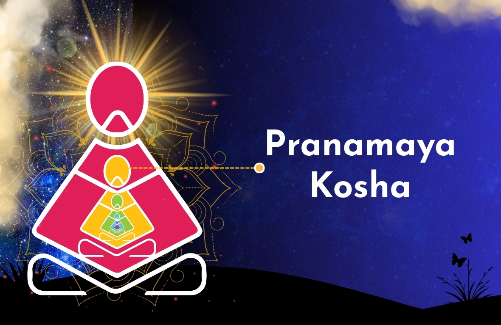

What is Pranamaya Kosha
Pranamaya Kosha also known as the "vital energy sheath “is the second of the five koshas (layers of human existence) in Vedantic philosophy . It acts as the energetic link between the physical body (Annamaya) and the mind (Manomaya). It is composed of prana (life force) and controls physiological functions like breathing, circulation, and digestion through 5 primary, subtle energy centers and 72,000 nadis(pathways).

Key Analytical Points from Yogic Literature
- Five Major Pranas (Vayus): The kosha is subdivided into five functions: Prana(inhalation), Apana (exhalation/elimination), Samana (digestion/assimilation), Udana(growth/expression), and Vyana (circulation).
- Subtle Anatomy: It consists of 72,000 nadis(astral channels).
- Research & Scientific View: Studies show that the functions of PranaMaya Kosha are directly related to the autonomic nervous system.
- Science of Breathing: Slow breathing (6-second inhale/exhale) increases Heart Rate Variability (HRV), enhancing strength and reducing restlessness of autonomic nervous system .
- Nadi Shodhana: Research suggests that Nadi Shodhana (alternate nostril breathing) clears energy blockages, improves metabolic health, and lowers high blood pressure.
- The Source of Wellness: The health of Pranamaya kosha determines the health of the physical body. Sickness first appears in this subtle energetic layer before manifesting in the physical body.
Meaning of Pranamaya Kosha in a Generalised Context:
- The "Energy Battery": The physical body is like a smartphone; the PranaMaya Koshai is the battery that keeps it powered, moving, and functioning.
- More than just Oxygen: While it manifests through breathing, ‘Prana’is not just air. It is the intelligent energy that tells the heart to beat and the cells to absorb nutrients.
- The Bridge: It connects the tangible physical body with the intangible thoughts and emotions.
Symbolic Significance of Pranamaya Kosha
- The Inner Bird: The Taittiriya Upanishad depicts Pranamaya-kosha as a bird's anatomy, with Prana as the head, Vyana as the right wing, Apana as the left wing, Akasha (space) as the tail, and Annamaya (earth) as the body.
- The Protector of Truth: It is a, "sheath" that covers the Manomaya (mind) and Vijnanamaya(intellect) layers, protecting the Atman (Divine Self) within.
How to Nurture the PranaMaya Kosha
- Pranayama: Controlled breathing exercises directly balance this sheath.
- Sattvic Diet: Consuming fresh, vibrant foods to feed the energy body.
- Yoga Asanas: Specifically backbends and opening poses that release blockages in the nadis.